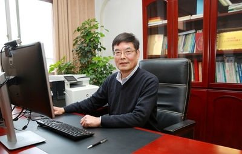

Academic Mentorship
My PhD Supervisor in China: Professor Qiang Yu
A personal note on the freedom, trust, and opportunities Professor Qiang Yu gave me throughout my doctoral journey.

遗憾的是，居然没有一张与于强老师的合照。
于强研究员是我心中最开明、最和善、最体谅学生和老师的一位老师。于老师给所有学生足够的自由和发挥空间，任意选题不设限，让学生做自己感兴趣的方向。
但是作为一个 GIS 背景的，毫无科研论文发表的小白，我对农业生态领域一窍不通。于老师曾试图给我把握大方向，让我做一些精细化温度插值预测的尝试，但是我都由于兴趣不高，白白浪费几年时间。
好在于老师也是非常鼓励学生出国交流，于是我努力申请到国家留学基金委（CSC）的出国联培机会。这次留学也是一波三折，一开始是美国，后因为国家关系改派澳大利亚，然后因为国家关系导致的签证延误改为日本北海道大学。但命运还是眷顾了我，在我刚刚提交北海道大学的申请时，澳大利亚的签证就收到了。
所以，我机缘巧合的遇到了宋泳泽老师。我开始做一些 GIS 相关的理论方法，两年的时候几乎玩的时间很多，论文止步不前，但却算是找到了自己喜爱的老本行。感谢于老师给予我充分的自由，从不干涉我所做的内容，即使与课题组毫不相关。
2024 年 12 月底，我与朋友结伴去澳洲东部玩，在悉尼与于老师匆匆见了一面，也没留下照片。
2025 年 9 月，我也勉强毕业了。毕业论文完全偏向 GIS，跟课题组的生态模拟方向偏离，于老师说他也给不了我什么指导，我只能自己把关。
非常感谢于老师，给我创造平台，创造条件，也创造了很多机会。于老师是我学术上的引路人，他的为人处事也深深影响着我。
让我学会了谦谦有礼，与人为善，不骄不躁，虚怀若谷。